“On the pre-warp, the drop ships [shouldn't] have nacelles. Make them look less enterprise / warp era. Show me mockup.”
Three original cargo landers for the human expedition from Earth: chemical rockets, fusion power on the ground, no shields or transporters, cranes and human crews. Each does Halyard 07's job (one mining crawler or rover per trip, ramp, four legs, rocket landing). After the first round the owner picked the look: a white hull, the Space Shuttle external tank's rust orange as the main accent (tanks, foam, stripes), black thermal tiles where the heat is, light grey details, and the player colour as a thin line.
A · LanderB · HopperC · FreighterDecided: a mix, random per orbiting shipIn the game
Decided What the owner chose
“Go with a mix … random. Could be any of them per orbiting ship.” · “White, Space Shuttle red/orange, hull names random like before. Legs should fold.”
Built
All three ships, mixed: in a Dawn of Warp match each player's orbiting ship carries one of A, B or C, picked at random per player from the map seed and the player's slot, so it stays the same for the whole game and after a reload. Every drop ship of that player uses it: vehicle deliveries, the three ships of the first landing and outpost drops. Other eras keep Halyard 07.
Colours: white panels, rust orange (#C8632A family) on the tanks, foam lines and a broad stripe, black tiles under the engines, on B's skirt and nose cap and on C's belly and nose, light grey details. Gold foil stays only on A's engine mounts and cab blankets. The player colour is a thin “Owner” line.
Hull names random, like before: every pre-warp ship draws a name from a list of 41 original Earth-expedition names (TALLGRASS, IRONWOOD, SOUTHWIND, BLUE HERON …) and a number like UE-14, per ship and never the same twice for a player. The achievement drop ship name still overrides it.
Legs fold: A's legs fold 124° straight up beside its tanks (moved off the diagonals to make room), B's 130° straight up the barrel over dark leg wells, both with the pads turned flat, contact face out. C folds like Halyard.
A and B's two-piece ramps: the tip unfolds after the main ramp and folds first when it closes; the unit drives the full length. B climbs out straight up instead of pitching over.
Lineup Halyard and the three pre-warp ships
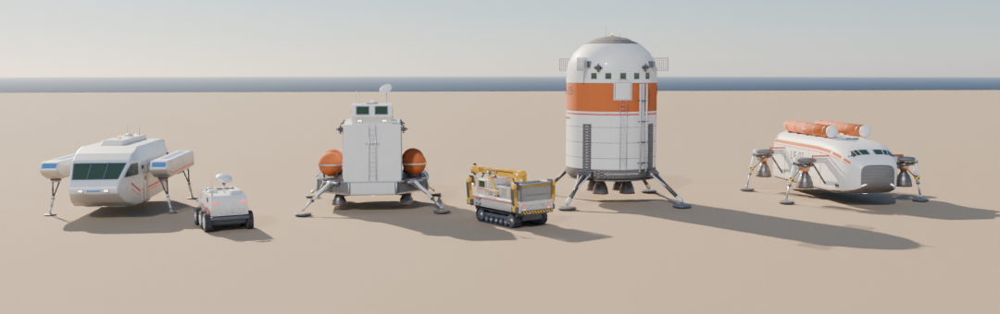
Left to right: Halyard 07 (every other era, 12.6 long, 5.6 high), A Lander, B Hopper, C Freighter. A Mk II rover and the mining crawler for scale.
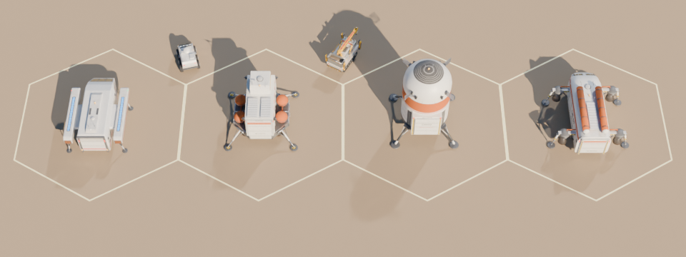
Landing camera: 55° down from 170 away, each ship on its own hex (25 across), shown at about 1.8× the game's pixels.
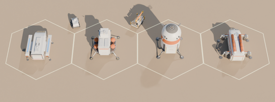
Actual size at 1280×720 (camera FOV 45°): a ship is about 60 px long. Halyard reads by its blue strips, A by its box and four orange tank dots, B as a white disc ringed in orange, C by its two orange tanks.
A Lander sample hull TALLGRASS · UE-02
A squat octagonal descent stage, white panels with black-tile bays over the four corner engines, carries four orange-foam spherical tanks on its side strips, a boxy white cargo module with an orange stripe and a faceted two-window crew cab. Four A-frame legs with dish pads, RCS quads on the module corners and a folding two-piece ramp: Apollo descent stage meets a modern heavy cargo lander.
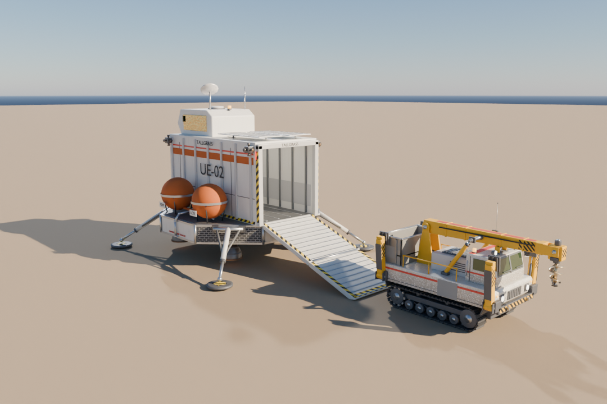
Landed, ramp down, the crawler driven off.
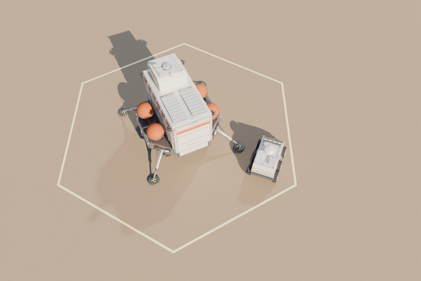
Game camera (as Halyard's preview: 55° down, 46 away).
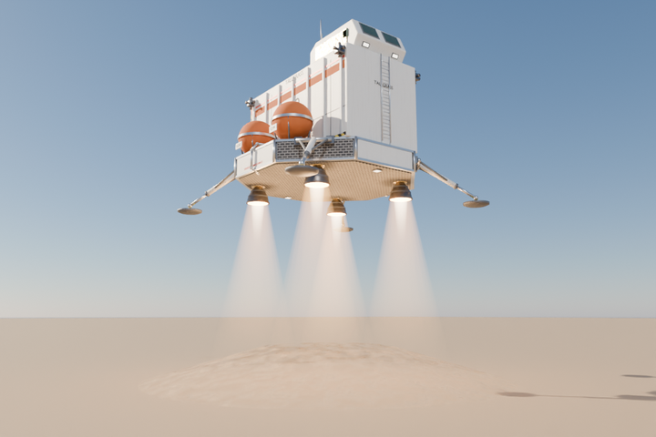
Descent: legs out, four bells burning.
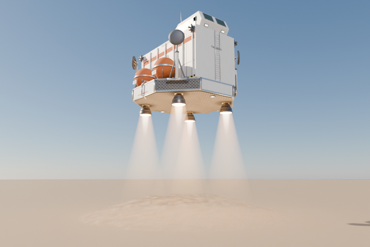
Legs folded (the climb-out): 123.6° straight up beside the tanks, pads turned flat.
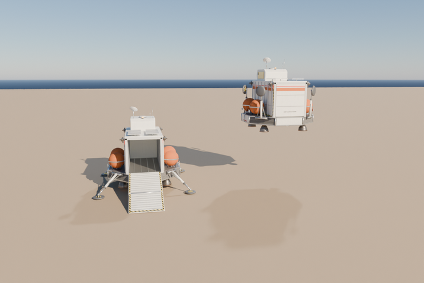
The game glb posed through its own pivots: ramp 109.6° + tip 180°, and legs folded.
Spec (in the game)
Size
8.4 across the stage, 11.8 over the pads, 8.0 to the cab roof (9.6 to the antennas)
Bay
3.6 wide × ~7.5 long × 3.8 high, deck 2.43 up
Ramp
hinge (0, 2.43, 4.1); 3.75 + tip 3.08 at 109.6°, toe 10.53 aft
Legs
pads (±5.02, ±5.02); fold 123.6°, pads turn back 33.6°
Engines
4 bells (exit 0.44 up, r 0.55) at (±2.51, ±2.51), RCS quads on the module corners
Game glb
dropship_prewarp_a.glb · 35 nodes · 42.8k tris · 2.9 MB
For the game
Says “space age, Earth” at a glance: spherical tanks, Apollo legs. Nothing about it is Starfleet.
Four corner bells are exactly what RocketPlume draws: four flames, one per corner.
Feels right for the colony landing: lowered on its plumes, crews and cranes unload it.
Watch out (resolved)
From above it is a white box with dots: the four orange tanks and the stripe now set it apart from the white buildings.
The two-piece ramp got its RampTip step in DropShipView: the tip unfolds after the main ramp, the drive-off runs its full length (~+1 s).
Apollo legs never retract: rebuilt as A-frames that swing as one piece, with the tanks moved clear of the diagonals, so they fold cleanly.
Crawler fit
Crawler 5.6 × 2.7 × 3.1 fits with 0.45 each side and 0.7 headroom.
The drive down is ~7 long at 19.6°, from 2.43 up.
B Hopper sample hull SOUTHWIND · UE-05
An upright reusable rocket lander, 7.2 wide and 13.3 tall: a white cargo barrel over a black tiled skirt, an orange tank section with the thin player-colour line under it, a white crew level with a row of windows, grid fins and a black-tiled nose cap. Four carbon A-frame legs hinge low on the skirt, a cluster of four engines sits under the heat shield, and a square door housing on one side drops a two-piece ramp to the ground.
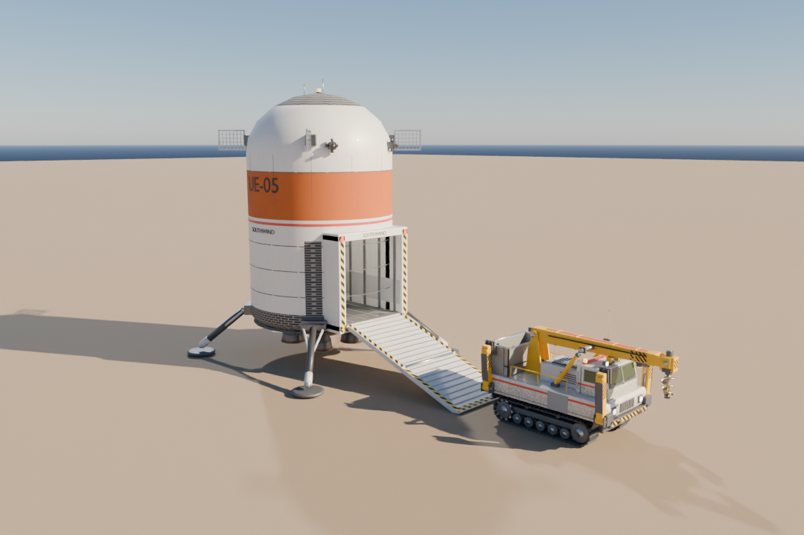
Landed, door-ramp down, the crawler driven off.
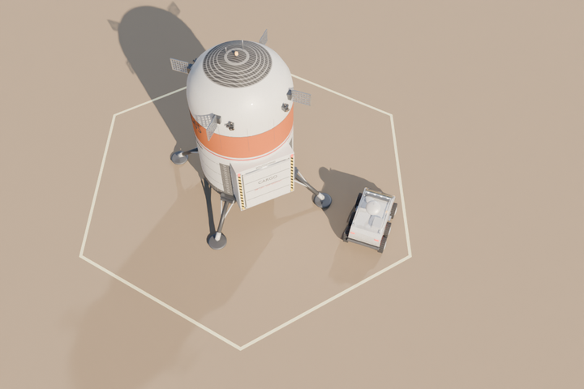
Game camera: the dome dominates; the orange band reads.
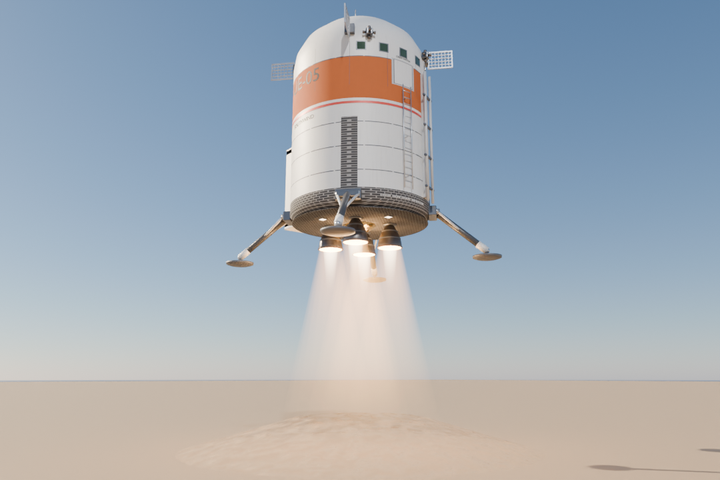
Descent: the four bells merge into one column.
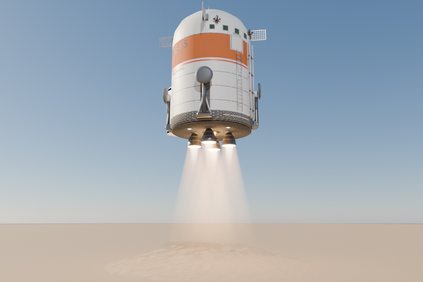
Legs folded: 129.8° straight up the barrel, pads flat against it.
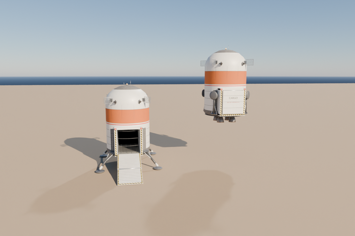
The game glb posed through its own pivots.
Spec (in the game)
Size
7.2 wide, 11.0 over the pads, 13.3 high (14 to the antennas)
Bay
3.6 wide × 6.7 deep × 3.9 high, floor 2.58 up
Ramp
hinge (0, 2.58, 3.98); the door 3.82 + tip 3.47 at 109.6°, toe 10.85 aft
Legs
pads (±4.49, ±4.49); fold 129.8°, pads turn back 39.8°
Engines
4 bells in a cluster (exit 0.73 up, r 0.62), RCS quads high on the barrel
Climb
straight up (no pitch-over, no aft thrusters)
Game glb
dropship_prewarp_b.glb · 35 nodes · 33.4k tris · 2.6 MB
For the game
The most distinctive silhouette: an unmistakable rocket, the clearest break from Halyard.
The game's rocket landing (fall, braking burn, hover, settle) suits an upright rocket best.
Small footprint for its size; easy to place beside the hub.
Watch out
From the 55° camera it is a white disc ringed in orange: you see the dome, not which way the door faces.
13–14 tall: towers over the Level 1 outpost and may clip the camera at the closest zoom (check in Godot).
Resolved: B climbs straight up, its legs fold ~130° (a per-model angle), and its door ramp has the RampTip step.
Crawler fit
The crawler goes in sideways across the barrel: 6.7 deep for its 5.6, 3.6 wide for its 2.7.
The bay is the barrel's chord, so this is the tightest of the three; a bigger vehicle later would not fit.
C Freighter sample hull IRONWOOD · UE-07
A horizontal lifting-body cargo hauler of the early 22nd century: white hull, black-tiled nose and belly, an orange flash along the flanks over the thin player-colour line, two orange foam tanks strapped along its back and Halyard's rear ramp. Its four vertical landing engines hang exposed on outrigger beams at the corners (chamber, turbopump, bell, gimbal struts) instead of nacelles; utilitarian panels and stencils, no fins.
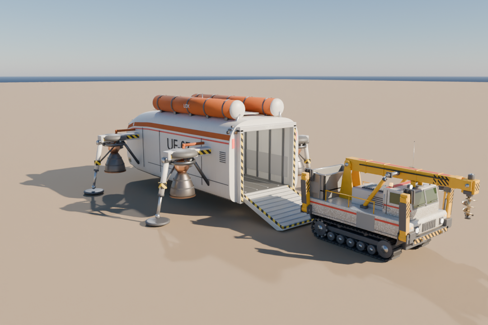
Landed, ramp down, the crawler driven off.
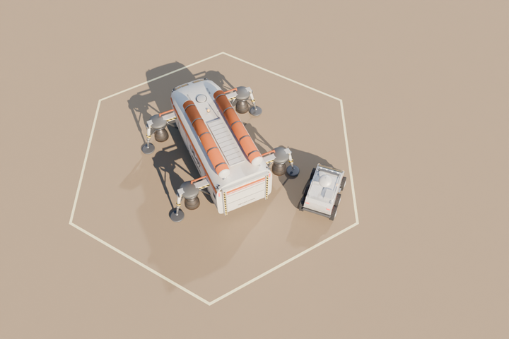
Game camera: tanks and pods make an “H”.
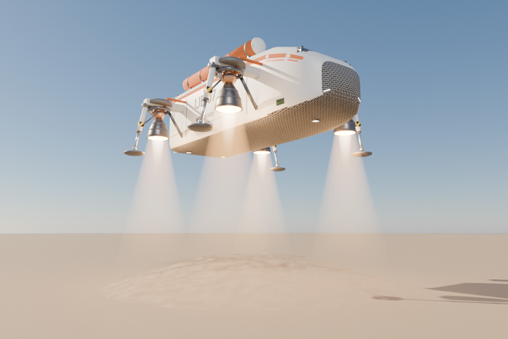
Descent: four corner plumes.
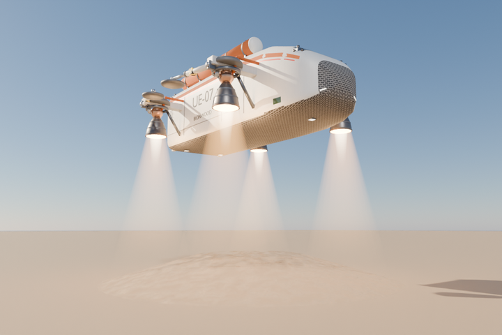
Legs folded as Halyard's: front ones aft, rear ones forward, 90°, pads level.
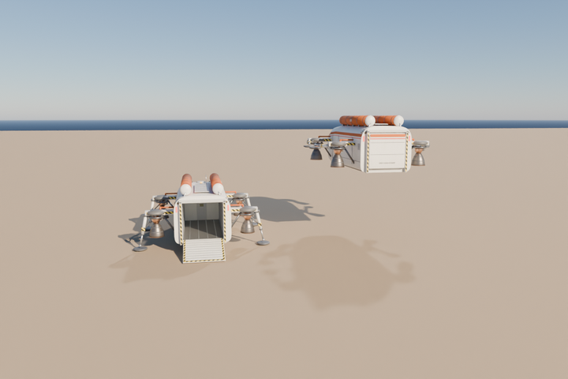
The game glb posed through its own pivots.
Spec (in the game)
Size
13.7 long, 12.5 over the engine pods, 6.2 high
Bay
3.6 wide × 8.0 long × 3.35 high, floor 1.25 up (Halyard's)
Ramp
hinge (0, 1.25, 6.4); one piece, 3.32 at 109.6°, toe 9.53 aft
Legs
pads (±5.65, -3.5 / 4.55); fold 90° like Halyard
Engines
4 bells in exposed pods at (±4.15, -3.5 / 4.55), exit 1.25 up, r 0.66; RCS quads at the nose and aft corners
Game glb
dropship_prewarp_c.glb · 33 nodes · 38.4k tris · 2.7 MB
For the game
Almost a glb swap: Halyard's ramp length, angle, leg folds and bay; only the hinge, pads and footprint move.
Readable from above: two orange tanks and four pods make a clear “H” that no building has, and the ramp end is obvious.
Plumes come from the four corners, wide apart: the landing looks stable and reads as rockets.
Watch out
Same layout as Halyard (box fuselage, rear ramp), so it's the least different of the three.
The exposed engines are detailed, but the joined game glb came out at 33 nodes, like Halyard.
Engine pods widen the footprint to 12.5: the landing-spot search uses C's own footprint points.
Crawler fit
Halyard's bay with 0.8 more length: the crawler fits with 0.45 each side and 0.25 headroom, like today.
Unload timing and path as Halyard's.
Side by side
Option
Footprint × height
Bay (w × l × h)
Ramp
In the game
From the game camera
Halyard 07
12.6 × 9.4 × 5.6
3.6 × 7.2 × 3.35
1 piece, 109.6°
Every era but Dawn of Warp (the default spec)
White box with blue nacelle strips
A Lander
11.8 × 11.8 × 8.0
3.6 × 7.5 × 3.8
2 pieces, 109.6°
Ramp tip unfold; legs fold 123.6°; longer unload path
White box, four orange tank dots, splayed legs
B Hopper
11.0 × 11.0 × 13.3
3.6 × 6.7 × 3.9
2 pieces, 109.6°
Ramp tip; straight climb; legs fold 129.8°
White disc ringed in orange
C Freighter
13.7 × 12.5 × 6.2
3.6 × 8.0 × 3.35
1 piece, 109.6°
Own hinge, pads and footprint; Halyard's folds
Orange “H” of tanks and pods
All three keep the game's part names (Ramp, RampTip on A and B, Leg0–3, Foot0–3, Thruster0–5, BayLight, Beacon, the name and number decal markers, the Owner material) and drop the nacelle glows. Thruster0–3 are the glowing insides of the four bells, so the flames start at the bell exits; Thruster4/5 are the aft-facing nozzles of two RCS quads. The game exports are joined like Halyard's (Body + RampBody (+ RampTipBody) + LegK/FootK bodies) with the procedural paint baked into one 2048² atlas each.
Questions answered
Which option? A, B or C, or a mix.a mix: each player's orbiting ship gets one of the three at random (per game, from the map seed and the player's slot), and all of that player's drop ships use it.
Colours?white, Space Shuttle red/orange as the main accent, black tiles where they make sense, light grey details; gold only as a small accent on A; the player colour a thin line.
One design for every pre-warp drop, or the convoy only?one model per player for everything they land: deliveries, the first-landing convoy and outpost drops. (The Earth supply ship is still to come; it can reuse the same pick.)
Hull names?random like before: a name from a pre-warp list and a UE-NN number per ship, never twice for a player.
Legs?they fold: A 123.6° and B 129.8° straight up the hull with the pads turned flat, C 90° like Halyard.